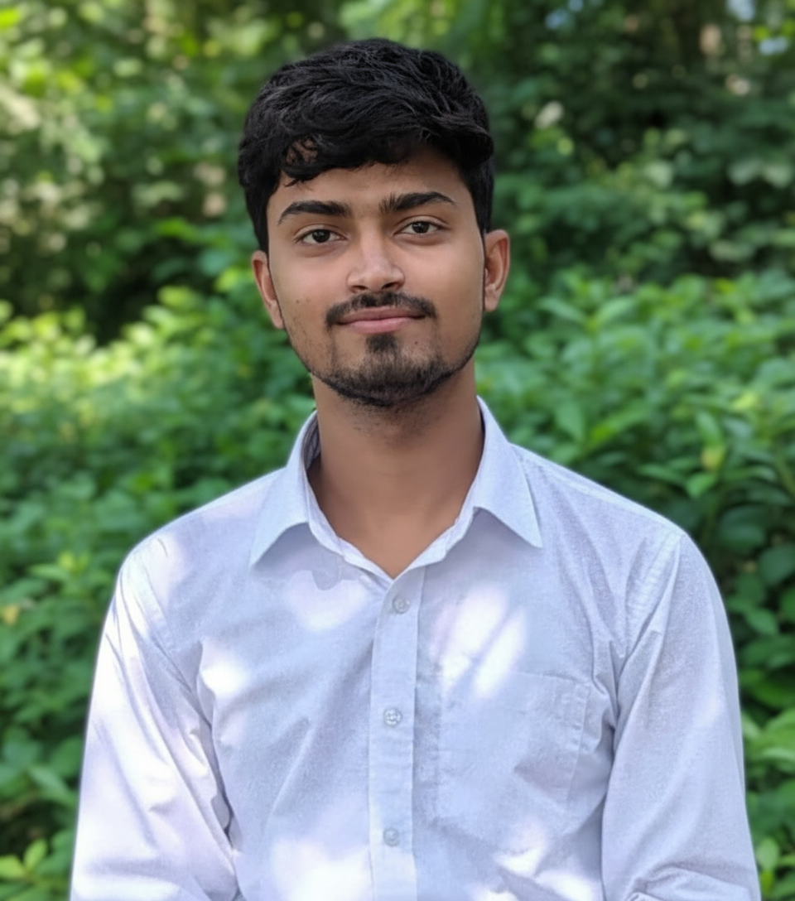

Hello!
Hi, I am Ujjwal Raj, a software engineering student at Gurukul Kangiri University in Haridwar, India, passionate about AI-DS, web development, programming, and emerging technologies.
✦ Coder ✦ Web Developer ✦ Presentation Designer ✦
Hi, I am Ujjwal Raj, a software engineering student at Gurukul Kangiri University in Haridwar, India, passionate about AI-DS, web development, programming, and emerging technologies.
Gurukul Kangiri University
Bachelor of Technology in Computer Science & Engineering
2025 - 2029
Hands-on experience in HTML, C, and Python. I am continuously learning new technologies and languages with enthusiasm and curiosity.
I am a first-year BTech student with a deep interest in technology, programming, and AI. I’m a member of GDSC, Competitive Programming Club, and GeeksforGeeks. I love problem-solving and exploring AI/ML through projects involving neural networks and NLP. I aim to grow as a full-stack developer and contribute to impactful tech solutions.